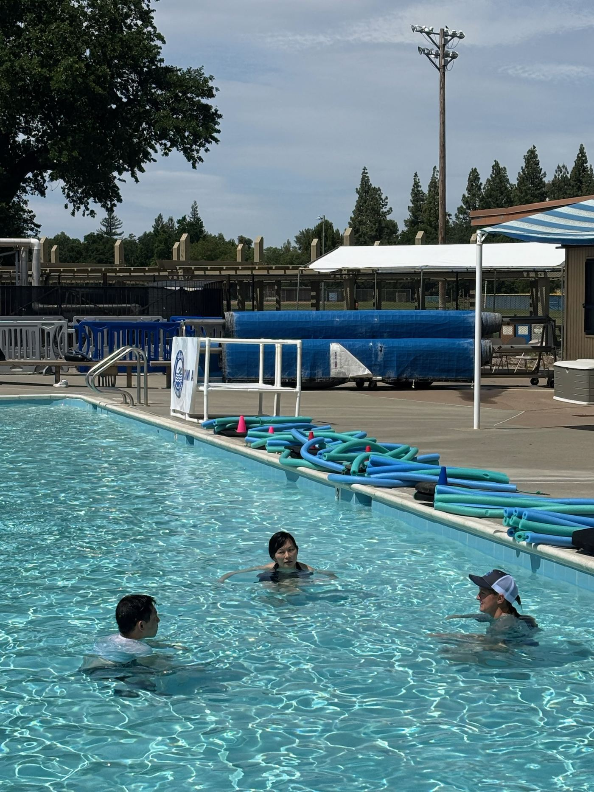

Safety Clinics
More clinics to come in the fall! Please fill out our interest form to stay updated.

What to expect
SWAG Clinics provide a welcoming, supportive and free space for adults to build confidence and skills in the water, no matter their starting point.
Participants are grouped by experience level (no water experience, basic, intermediate, and advanced), so everyone can learn at a pace that feels comfortable and effective.
Each session includes guided water comfort, foundational skills, and practice, with instructors providing continuous support and feedback throughout.
SWAG Clinics are about more than just learning to swim. They are about building confidence, creating community, and developing lifelong water safety skills.
Stay tuned for future clinics!
Fill out the interest form and we'll reach out as soon as fall clinic dates are set.